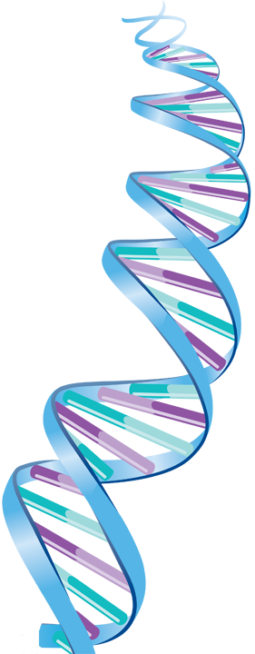

Nisha Gupta; Abhishek Chaudhuri; and Debasish Chaudhuri Morphological and dynamical properties of semiflexible filaments driven by molecular motors, Phys. Rev. E 99, 042405 – Published 15 April 2019.
Palka Puri; Nisha Gupta; Sameep Chandel; Supriyo Naskar; Anil Nair; Abhishek Chaudhuri; Mithun K. Mitra; Sudipto Muhuri; Dynein catch bond as a mediator of codependent bidirectional cellular transport, Phys. Rev. Research 1, 023019 – Published 18 September 2019.
Jagadish P. Hazra ; Nisha Arora ; Amin Sagar ; Shwetha Srinivasan ; Abhishek Chaudhuri ; Sabyasachi Rakshit; Force-activated catalytic pathway accelerates bacterial adhesion against flow, Biochem J (2018) 475 (16): 2611–2620. RESEARCH ARTICLE- AUGUST 29 2018.
Rajneesh Kumar; Abhishek Chaudhuri; Rajeev Kapri; Sequencing of semiflexible polymers of varying bending rigidity using patterned pores, J. Chem. Phys. 148, 164901 (2018); https://doi.org/10.1063/1.5036529, Published Online: 30 April 2018 Accepted: April 2018.